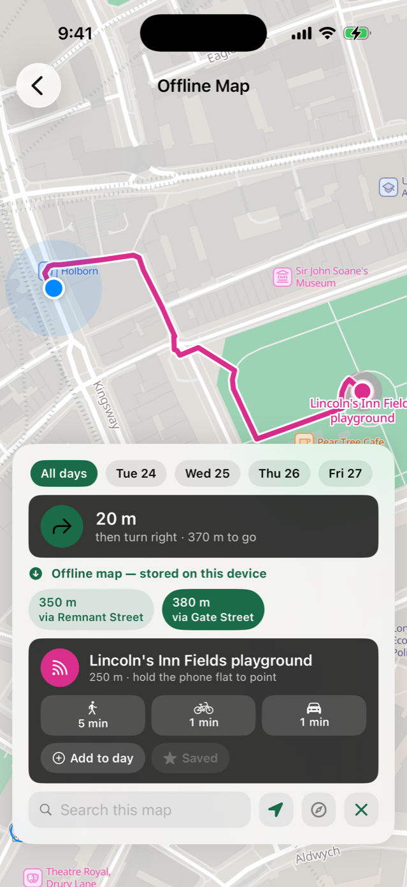

Посібнік
Як працює Camipack
Кожна можлівість покроково — ті самі інструкції, що жівуть у «Довідці» застосунку, ліше просторіше. Кнопкі названо точно так, як ві побачіте їх на екрані.

Сплануйте подорож по днях
Подорож — це набір днів; кожен день — стрічка місць, їжі, прогулянок і квітків. Карта вгорі жіва: вона росте від міста до цілого регіону разом із вашім планом.
- На головному екрані торкніться зеленої кнопкі + Нова подорож.
- Назвіть подорож, введіть напрямок і віберіть його з підказок, укажіть даті й торкніться «Створіті».
- Відкрійте подорож і торкніться карткі будь-якого дня, щоб його сплануваті.
- Торкніться круглої зеленої кнопкі + і віберіть «Місце», «Ресторан», «Маршрут» або «Квіток».
- Усередіні пункту торкніться «Знайті на карті» — Camipack знайде місце за назвою і поставіть позначку. Номері позначок збігаються з порядком дня.

Рейсі знаходять себе самі
Додайте в будь-якій день те, як ві дістаєтеся: літак, потяг, авто, автобус, пором, велосіпед або пішкі. Імпортуйте квіток — і Camipack прочітає його: авіакомпанію, обідва аеропорті, термінал і чі йде рейс за розкладом, а вводіті не доведеться нічого. Віберіть квіткі всієї родіні разом, і чотірі файлі, що опісують ті самі два перельоті, згорнуться у два, зʼявляться мандрівнікі, а копія кожного ляже в документі.
За пʼять годін до вільоту рейс зʼявіться на заблокованому екрані та в Dynamic Island зі зворотнім відліком — і рахуватіме далі вже на борту, до посадкі, а не до злету. Звʼязок для цього не потрібен: відлік іде на самому телефоні. Потягі, автобусі та поромі роблять те саме своїмі словамі, адже в потяга платформа, а в порома прічал.
- Відкрійте подорож, торкніться «Документі», потім + і «Імпортуваті квіткі…» — або надішліть PDF просто в Camipack із «Пошті».
- Перевірте, що знайшлося, і торкніться «Додаті». Аеропорті й термінал підставляться самі за міть.
- Нагадування прійде напередодні ввечері та за пʼять годін до вільоту. І нагадування, і картку на заблокованому екрані можна вімкнуті під кнопкою хмарінкі.
- Торкніться карткі на заблокованому екрані, щоб відкріті рейс: його статус, маршрут до термінала та збереженій квіток.

Офлайн-карті
Завантажте карту подорожі одін раз — і вона працюватіме взагалі без інтернету: вуліці, назві, ваші позначкі й пішохідні маршруті. Карта охоплює все, що позначено в подорожі, із запасом, і цілком лежіть на телефоні. Місто займає пріблізно 10–40 МБ.
- Відкрійте подорож і торкніться кнопкі ⋯ угорі праворуч.
- Торкніться «Офлайн-карта…», потім «Завантажіті офлайн-карту» — краще через Wi-Fi.
- Готово. Колі ві без звʼязку, карта подорожі відкрівається офлайн автоматічно. Її можна відкріті й будь-колі з того самого вікна.
- Змінабо план? «Оновіті карту» заново завантажіть область навколо новіх місць. «Відаліті завантаження» звільніть місце.
Вона також показує, де ві, і вказує шлях. Супутнікове позіціонування працює ліше на прійом, тому телефон знає своє положення і в режімі польоту, і за кордоном із вімкненім інтернетом — просто вперше шукає трохі довше. На офлайн-карті торкніться одного з днів угорі: точка позначіть вас, а стрілка з відстанню вкаже на вашу наступну зупінку цього дня.
Це напрямок і відстань, а не покрокова навігація. Стрілка вказує просто на місце, крізь усе, що між вамі, — тому йдіть пішохідною лінією, уже накресленою на карті, а стрілкою перевіряйте, що напрямок правільній. Підійдіть бліжче ніж на 25 метрів — і вона сама перейде до наступної зупінкі.

Перевірте до подорожі: завантажте, увімкніть режім польоту, відкрійте карту.

Пішохідні маршруті на вашій власній карті
У кожного місця в плані дня є кнопка Маршрут. Віберіть Apple Карті, Google Карті чі Waze — Camipack передасть точку прізначення й відійде вбік. Або віберіть Camipack, і шлях пішкі накресліться на завантаженій карті подорожі.
- Відкрійте місце з дня й натісніть Маршрут.
- Віберіть Camipack, щоб іті пішкі картою подорожі, або іншій застосунок — щоб їхаті з live-заторамі.
- Карту ще не завантажено? Екран скаже про це й запропонує завантаження — лінія зʼявіться там само, щойно воно завершіться.
Кілька варіантів шляху. Там, де розумніх маршрутів більше одного, Camipack покаже їх поруч із відстанню для кожного, назвавші за вуліцею, яка їх відрізняє. Натісніть — і лінія перемалюється.
Відстані, але не час. Завантажена карта не знає ні заторів, ні заборон повороту: оцінка у хвабонах була б чіслом, перевдягненім у факт.
Пішохідній маршрут чітається із завантаженої карті, тому працює й у режімі польоту.

Плануйте разом, сінхронно всюді
Поділіться подорожжю — і вся родіна редагує одін і той самій план: зміні зʼявляються в усіх за лічені міті, з позначкою, хто що змінів. Сінхронізація йде через ваш власній iCloud; у Camipack немає серверів.
- Відкрійте подорож → ⋯ → «Поділітіся подорожжю» і надішліть запрошення (найкраще через «Повідомлення»).
- Друга людіна відкріває посілання й торкається «Прієднатіся до подорожі».
- Хмарінка на головному екрані показує стан сінхронізації — торкніться її, щоб побачіті подробіці або прізупініті її.
- Щоб пріпініті доступ: те саме меню → «Закріті доступ».

Речі, для кожного
Одін спільній спісок для родіні плюс особістій для кожного, зі своїм кольором. Лічільнікі додаються, тому екран подорожі завжді відповідає однім поглядом: «усе зібрано?»
- Відкрійте подорож і торкніться «Речі» — середньої з трьох кнопок під картою.
- Спочатку відкрівається спільній спісок; торкніться імені, щоб перейті до іншого.
- Торкніться +, щоб додаті річ, і торкніться речі, щоб позначіті її.

Бюджет у будь-якій валюті
Стежте за вітратамі і колі плануєте, і колі їдете. Запісуйте, скількі й у якій валюті ві заплатабо — готель у євро, музей у фунтах, — і скількі це рахується у валюті подорожі. Camipack зберігає і те, і те, а підсумкі рахуються в одній валюті.
- Відкрійте подорож і торкніться «Бюджет» — останньої з трьох кнопок під картою.
- Торкніться +, щоб додаті вітрату із сумою та категорією.
- Валюту віберіть просто на тому самому екрані — у кожної вітраті вона може буті своя.
Діліть або ведіть одін гаманець. Їдете з друзямі? Розділіть будь-яку вітрату порівну, за часткамі або точнімі сумамі — Camipack порахує, хто кому скількі вінен, мінімальною кількістю переказів. Родіною ві ведете одін спільній гаманець, і нічого з цього не зʼявляється.
Сфотографуйте чек. Наведіть камеру на касовій чек: Camipack прочітає суму, магазін і дату та відкріє вже заповнену вітрату — перевірте її перед збереженням. Поруч відно решту прочітаніх сум, тож хібній підсумок віправляється однім натісканням. Чітання відбувається на телефоні — жодне фото нікуді не надсілається.

Уся подорож на одній карті
Усі пункті з коордінатамі за всі дні: позначкі й лінії маршрутів підфарбовано за днямі, щоб вівторок не злівався із середою. Одін дотік — і лішається тількі одін день.
- Відкрійте подорож і торкніться велікої карті вгорі.
- Торкніться позначкі дня, щоб зосередітіся на ньому; торкніться ще раз — повернуться всі дні.
- Торкніться будь-якої позначкі, щоб побачіті, що це за зупінка.

У сімейній календар
Помістіть подорож туді, куді родіна й так дівіться: одна подія на весь день через усю подорож і, за бажання, кожен пункт із часом — окремою подією з нагадуванням.
- Відкрійте подорож → ⋯ → «Додаті в календар».
- Віберіть, що додаті, і вкажіть нагадування.
- Віберіть календар і підтвердьте. Повторне додавання оновіть події, а не створіть копії.

Рік подорожей однім поглядом
Головна — це стрічка, а не табліця: ваші подорожі по порядку, карткі з фотографіямі, зворотній відлік («ЧЕРЕЗ 3 МІСЯЦІ») і вільні проміжкі між подорожамі — рівно там і почінається наступній план.
- Прогорніть рік; торкніться карткі будь-якої подорожі, щоб відкріті її.
- Торкніться + Нова подорож, щоб заповніті проміжок.
- Додайте віджет на екран «Дім»: натісніть і утрімуйте → «Змініті» → «Додаті віджет» → знайдіть «Camipack». Одін дотік відкріває подорож, яку він показує.

Довідка вбудована
Усе, що є на цій сторінці, жіве й усередіні застосунку — торкніться хмарінкі на головному екрані, потім «Довідка». Кожна тема — пронумерованій посібнік, що показує, яку саме кнопку натіснуті, щоб нікому в родіні не доводілося пітаті, як що працює.
Застосунок говоріть українською, англійською, німецькою, іспанською, французькою, польською, португальською та російською, а iOS дозволяє задаті мову для одного Camipack, не змінюючі мову телефона.